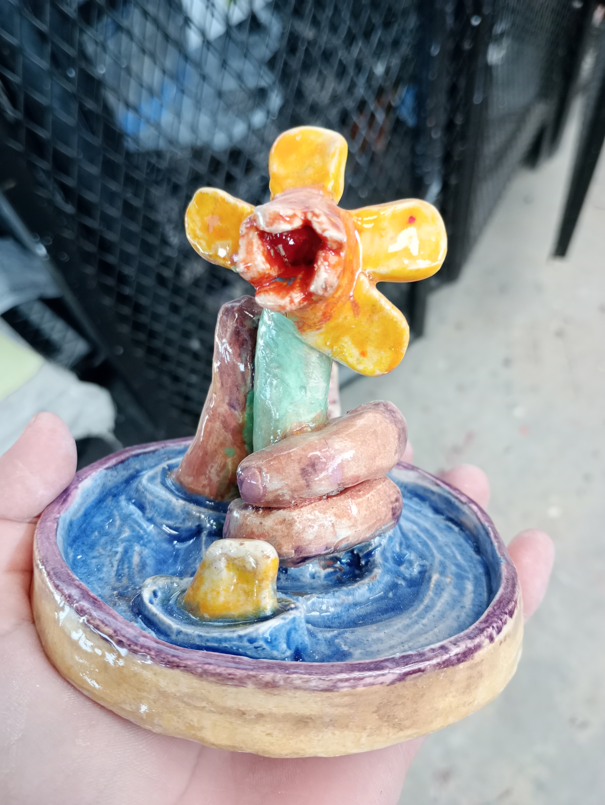

Fotografía

¿Por qué fotografía artistíca? - La fotografía artistíca es una forma de contar historias mediante sensaciones y sentimientos, de manera que el espectador reflexione mediante estas.
Cerámica

Descubre mis piezas de cerámica, creadas con técnicas tradicionales y modernas.
Ver Más¿Por qué cerámica? - La cerámica es un medio de expresión para contar historias, en mi caso expllorando las moralejas de diferentes mitos.
Escultura

Adéntrate en mi mundo de esculturas, donde doy vida a ideas a través de diferentes materiales.
Ver Más¿Por qué esculturra? - La escultura es el medio que uso para expresarme, es una mirada intima mi mundo interior.